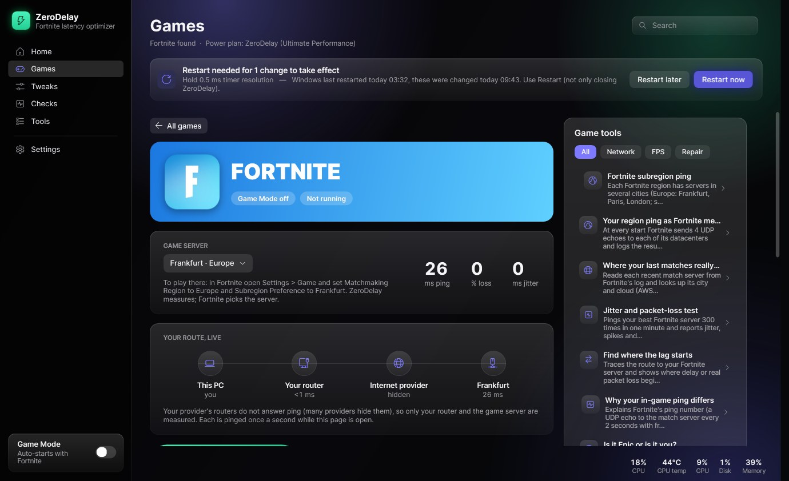
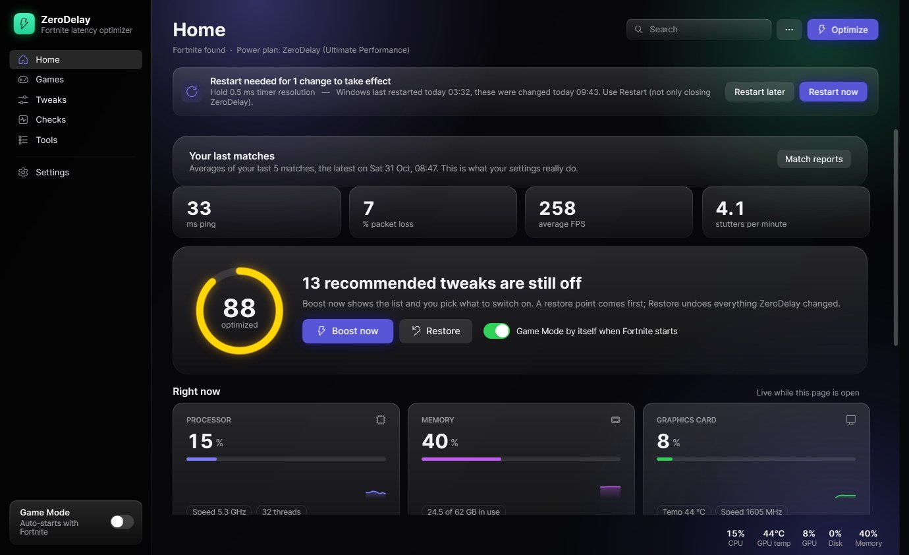
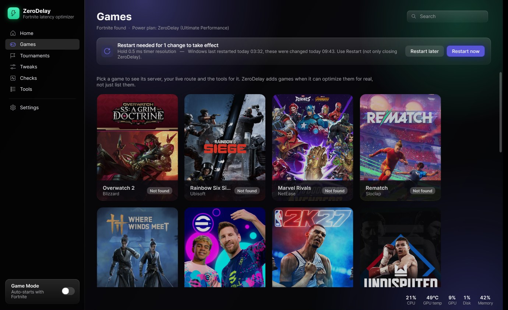
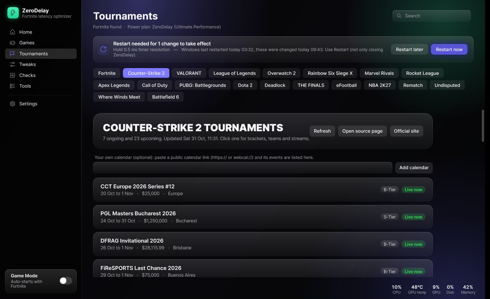
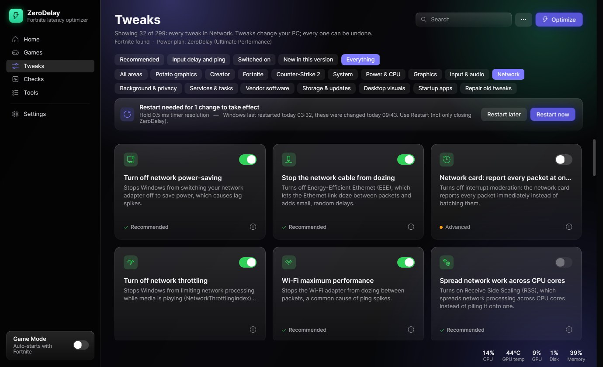
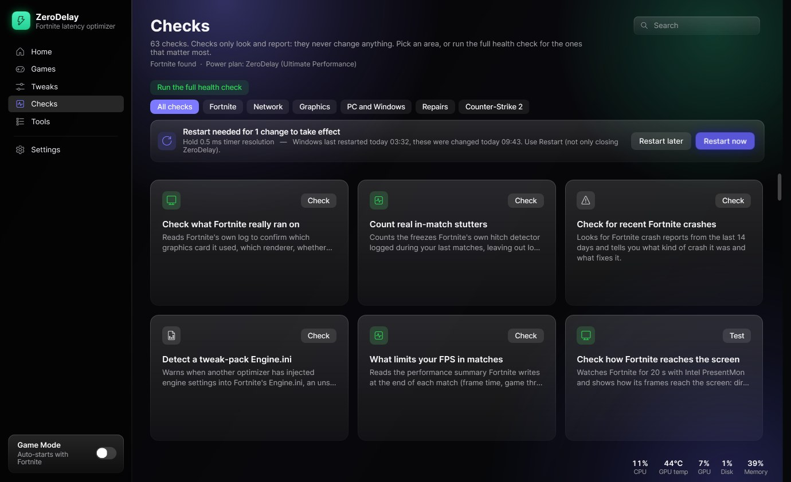
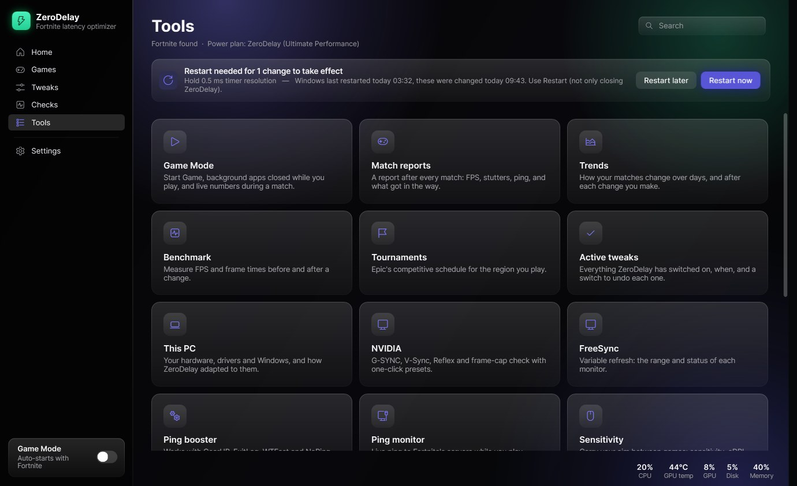

FreeOpen sourceWindows 10 and 11
Less input delay.
No placebo.
ZeroDelay tunes Windows, your graphics driver and your games for lower input delay, steadier frames and cleaner ping. Every change says what it does, when not to use it, and comes back with one click.
SHA-256

Measured, not guessed
Each tweak is backed by a vendor document or a published measurement. When tests showed four popular tweaks did nothing, they lost their "recommended" tag and now say so.
Everything comes back
The original value is saved before anything changes. Switch a card off, or press Restore, and your PC is as it was. A Windows restore point comes first.
Anti-cheat stays untouched
No injecting, no game files, no memory reading. ZeroDelay only changes settings you could change yourself, so it is safe with Easy Anti-Cheat, VAC and the rest.
Home
Your results first
The first thing you see is what your last matches were really like: ping, packet loss, FPS and stutters, read from your own games. Below it, how much of the recommended setup is on, and live load for your processor, memory, graphics card, disk and internet.

Games
A page for every game
24 games, each with its own page and its logo read from your installed copy. Watch your route live from your PC to your router, your provider and the game server, then press Start Game. Each game has its settings and checks in one panel next to it, and its own performance trends.

Tournaments
What is on, for every game
Pick a game and see the tournaments that are live now or coming up, with dates, prize money and tier, from Liquipedia. Every game links to its official schedule, and you can add your own calendar. Fortnite gets Epic's official schedule for your region.

Tweaks
300 tweaks, shown a few at a time
You start with the recommended ones for your PC. Filters show input delay and ping, what is switched on, what is new, or one area at a time: Fortnite, graphics, network, power and more. Every card has a plain title and a line on when not to use it.

Checks
Find what is really holding you back
Checks only look and report. What limited your FPS last match, whether your memory runs at its rated speed, whether your graphics card has all its PCIe lanes, where your matches were hosted, and leftovers from other tweak packs that break anti-cheat.

Tools
The rest of the toolbox
Game Mode closes background apps while you play and puts them back afterwards. Match reports after every game, trends over weeks, a benchmark, a sensitivity converter, a mouse polling test, cleanup and debloat that only remove what you pick.

Supported games
Every game has its own page with its logo, tweaks, live route and performance trends, and its tournaments in the Tournaments tab.
- FortniteSettings, server list, match stats
- Counter-Strike 2Settings, server ping, match stats
- ValorantSettings
- Marvel RivalsDriver and guided settings
- Overwatch 2Settings
- Rainbow Six Siege XSettings
- RematchSettings
- Where Winds MeetSettings
- eFootballDriver and guided settings
- NBA 2K27Settings
- UndisputedSettings
- Rocket LeagueSettings, match stats
- Apex LegendsSettings
- THE FINALSSettings
- Call of DutyDriver and guided settings
- Battlefield 6Settings
- PUBGSettings
- League of LegendsDriver settings, match stats
- Dota 2Settings, match stats
- DeadlockSettings
- GTA V Enhanced and LegacySettings
- RobloxSettings
- Escape from TarkovSettings
Install in a minute
- 1
Download
Get
ZeroDelay-Setup.exewith the button above. The SHA-256 under it lets you check the file is the one published on GitHub. - 2
Get past SmartScreen
Windows warns about apps without a paid code-signing certificate. Click More info, then Run anyway. The full source is on GitHub if you want to read it first.
- 3
Allow admin rights
Power plans, network adapters and driver settings need administrator rights, so Windows asks once each time ZeroDelay starts.
- 4
Press Boost now
ZeroDelay offers a restore point, lists the recommended tweaks that are still off, and you tick what you want. Updates install from inside the app with Update now.
Questions
Can it get me banned?
ZeroDelay never touches anti-cheat, game files or game memory. It changes Windows settings, your graphics driver's settings for a game, and the game's own settings file, the same file the in-game menu writes. Where a publisher asks players not to edit that file, ZeroDelay shows you the menu setting instead of changing it.
How do I undo something?
Switch the card off and the saved original comes back. Restore on Home undoes everything ZeroDelay changed. If you made a restore point at the start, Windows can roll back to it too.
Will it give me more FPS?
It depends on your PC. ZeroDelay does not promise numbers; the score on Home counts the recommended tweaks that are on. Your match reports and the benchmark show what actually changed for you.
Does it collect data?
No accounts and no analytics. It contacts GitHub to check for updates, Epic's status page and game servers when you run a ping or route test, and Intel's GitHub when you choose to download PresentMon for the latency test.
Why does Windows warn about it?
Code-signing certificates cost several hundred euros a year, and ZeroDelay is free. Every release lists its SHA-256 so you can check the download matches the published file.
Does it work with other optimizers and ping boosters?
It works alongside GearUP, ExitLag, WTFast and NoPing. When it finds another optimizer installed, it shows what it would change instead of fighting over the same settings.
What changed
Straight from the releases on GitHub.
Loading the latest releases…